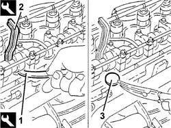

1036H10 CHECK AND ADJUST VALVE TAPPETS
- Path
- Procedures > 10 ENGINE > 1036 TIIMING SYSTEM > 1036H TAPPETS AND ROCKER SHAFTS > 1036H10 CHECK AND ADJUST VALVE TAPPETS
- Kind
- repair procedure (removal / refitting; the operation number is the code)
- Applies to
- engines: 2.4 JTD 10V; all production periods
- Interactive page
- https://sloeber94.github.io/elrnDB-lThss/en/#/98704
Applies to: all engines; all production periods
See in Op. 1016A20
See in Op. 1036H14
1. Lower the tappet in question using a suitable tool.
 | Description | Code | Function |
|---|---|---|---|
1 | Lever | 1.860.443.000 | Lower tappets |
2. Fit the tool for keeping the tappet lowered, then remove the pressure lever positioned previously.
| Description | Code | Function |
|---|---|---|---|
2 | Lever | 1.860.724.001 | Keep tappets lowered |
3. Remove the valve clearanance adjustment plate and replace it with a one of a suitable thickness.
- Remove the tool for keeping the tappet lowered.
- Continue, repeating the procedure described for the remaining valves.

Applies to: all engines; all production periods
See in Op. 1036H14
See in Op. 1016A20